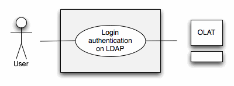
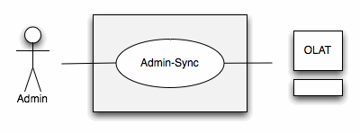
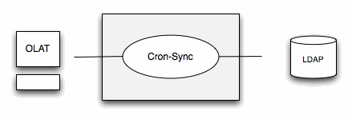
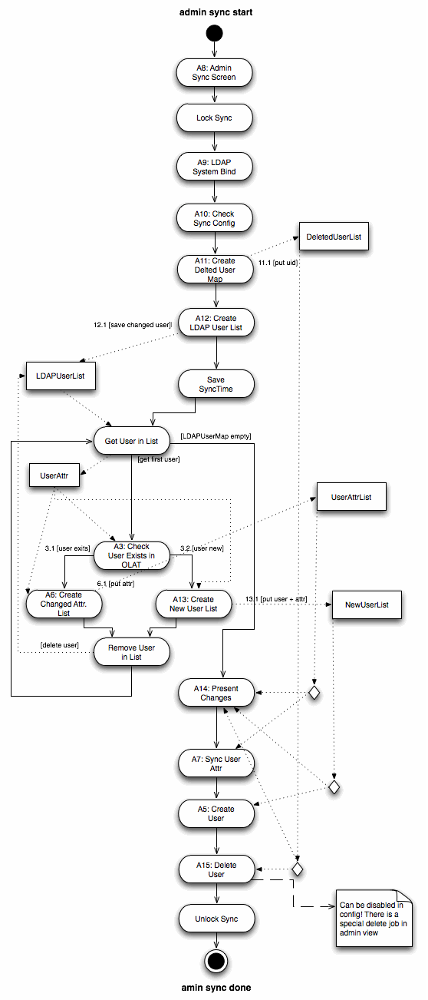
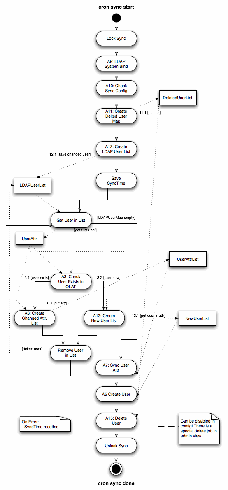

OLAT - LDAP authentication module
Documentation of ldap package by Maurus Rohrer during GSoC
Use Cases:
Business Use Case 1:
The user enters the OLAT URL in his web browser and will be prompted to enter his user name and password. This Information is send to the configured LDAP server and checked on it's validation. If the user exits in LDAP and the password is the same as in LDAP, the user is redirected to his home environment in OLAT.

Business Use Case 2:
The OLAT administrator can start the admin-sync on a special side in OLAT. The admin-sync is gathering all information on the LDAP server and compares them with the one in the OLAT DB, all differences will be prompted to the administrator, if he confirms all changes will be written to the OLAT DB.

Business Use Case 3:
In a special configuration-file the administrator can specify the time an periods in which the cron-sync process should be executed. The cron-sync process is doing the same activities as the admin-sync, except that the changes don't need to be confirmed. All differences will be automatically written to the OLAT DB

Flow-Diagrams:
Detailed Flow-Diagram Use Case 1:
Detailed Flow-Diagram Use Case 2:

Detailed Flow-Diagram Use Case 3:

Class-Diagram:

Configuration:
To get the LDAPLogin Authentication Module running the olatextconfig.xml has to be configured. The different parameters are explained in the following table. The config file is saved under serviceconfig.org.olat.ldap._spring.olatextconfig.xml.
|
Property |
Description |
Notes |
|
enableLDAPLogin |
Enable or disable LDAP Module |
true or false. If true LDAP Module will be loaded, otherwise the Module can't be used. |
|
ldapURL |
URL to LDAP Directory |
If miss-configured, module will not be loaded. |
|
ldapSystemDN |
DN for system-user how can search throw hole directory. |
If miss-configured, module will not be loaded. |
|
ldapSystemPW |
Password for ldap system-user |
If miss-configured, module will not be loaded. |
|
ldapBases |
List of bases where to find users |
If miss-configured, no users will be synced and create. |
|
sslEnable |
Enable if LDAP uses SSL |
Keystore must contain certificate of LDAPs server. If not OLAT will not be starting. |
|
trustStoreLocation |
Path to keystore |
If miss-configured, OLAT won't start. |
|
trustStorePwd |
Password for keystore |
If miss-configured, OLAT won't start. |
|
trustStoreType |
Type of keystore |
If miss-configured, OLAT won't start. |
|
cacheLDAPPwdAsOLATPwdOnLogin |
Saves LDAP Password in OLAT |
When users log in via LDAP, the system can keep a copy of the password as encrypted hash in the database. This makes OLAT more independent from an offline LDAP server and users can use their LDAP password to use the WebDAV functionality. When setting to true (recommended), make sure you configured pwdchange=false in the olat.properties file. |
|
convertExistingLocalUsersToLDAPUsers |
Saves Olat Users as LDAP Users |
When the system detects an LDAP user that does already exist in OLAT but is not marked as LDAP user, the OLAT user can be converted to an LDAP managed user. When enabling this feature you should make sure that you don't have a user 'administrator' in your ldapBases (not a problem but not recommended) |
|
deleteRemovedLDAPUsersOnSync |
Deleted users on Sync |
Users that have been created vial LDAP sync but now can't be found on the LDAP anymore can be deleted automatically. If unsure, set to false and delete those users manually in the user management. |
|
ldapSyncOnStartup |
Start Sync on OLAT startup |
Should users be created and synchronized automatically? If you set this configuration to false, the users will be generated on-the-fly when they log in |
|
ldapSyncCronSync |
Enable Cron Sync |
Will execute cron-sync on defined schedule |
|
ldapSyncCronSyncExpression |
Define schedule |
Typically unix-cron configuration |
|
ldapUserObjectClass |
LDAP Person Schema |
|
|
reqAttrs |
Attributes which must exist in LDAP |
Define which user
attributes are mandatory and how they are mapped to OLAT user
properties. Note that OLAT requires at least the user properties
userID and email. Those must be listed as mandatory. Others can be
added as mandatory as well, but make sure the configuration here
is consistent with the user properties configuration in the
olat_userconfig.xml file. It is strongly recommended to add also
lastName and firstName. See the olat_userconfig.xml file to learn
which OLAT user properties are available. The maps require entries
in the following syntax: |
|
userAttributeMapper |
Attributes which will be saved in OLAT |
Look at reqAttrs |
|
staticUserProperties |
Static User Properties |
Specify static OLAT user properties that should be populated with a predefined value for each user. This is an optional feature, leaf the property empty if you don't need it. It can be use e.g. to distinguish LDAP users from local OLAT users in a course using the getUserProperty() condition. |